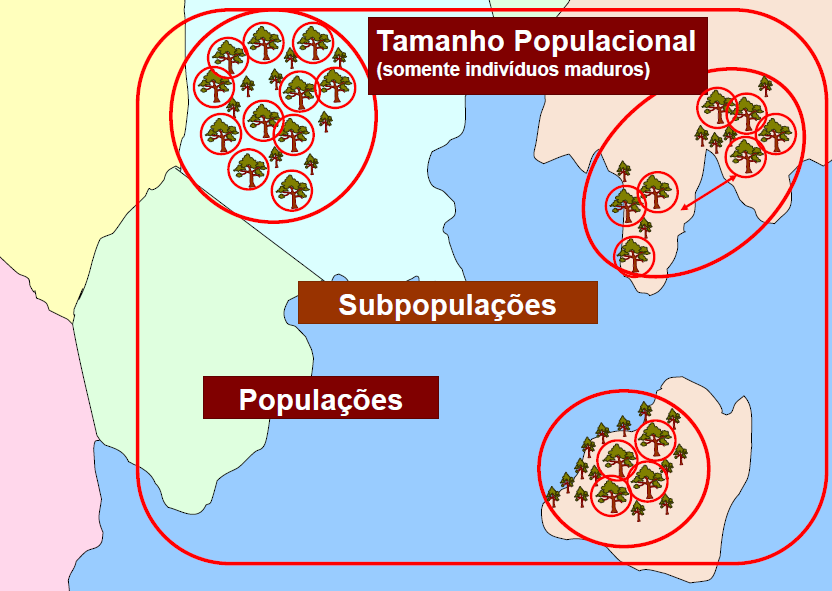
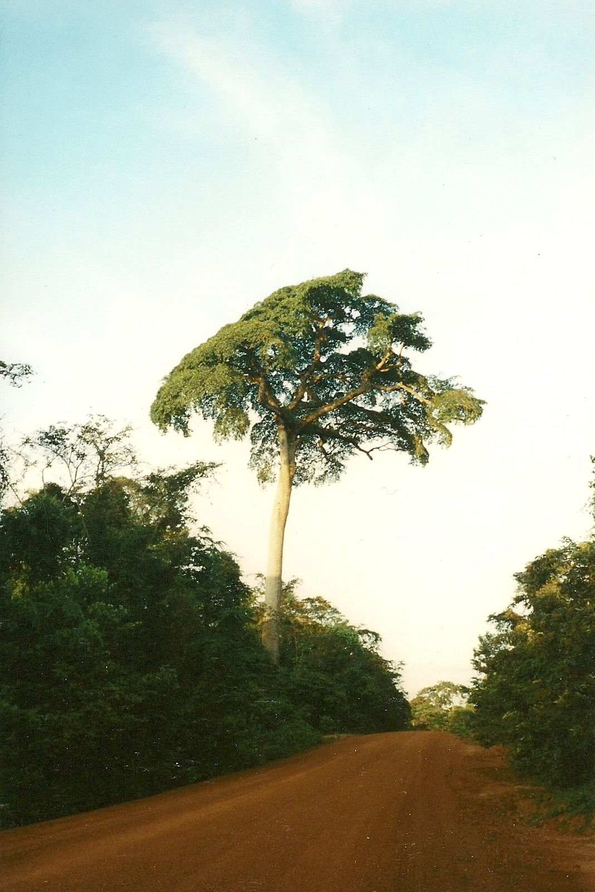
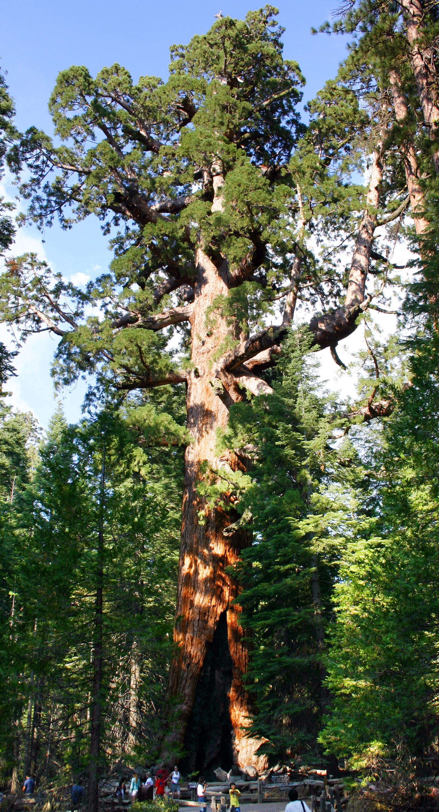
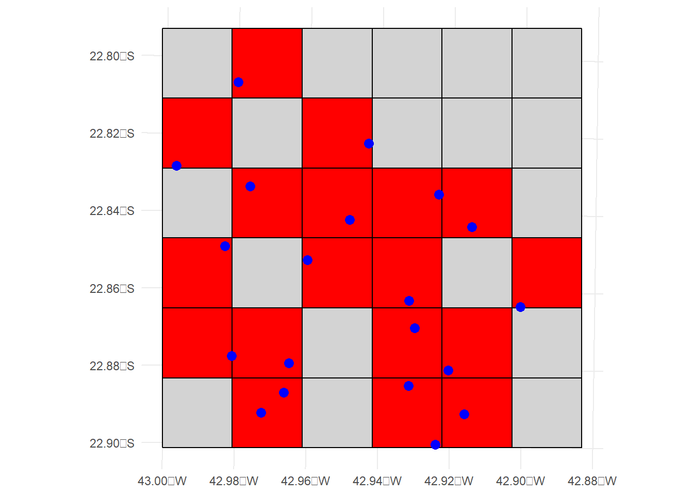
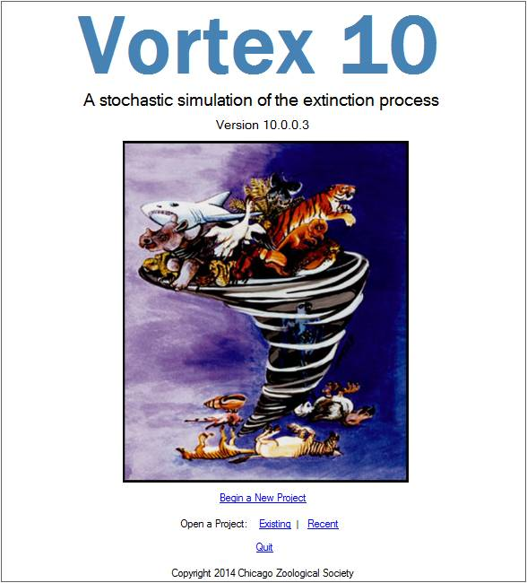

Os critérios da Lista Vermelha da IUCN incorporam dois problemas centrais do risco de extinção, reconhecidas como paradigmas da biologia da conservação: populações em declínio e pequenas populações(Caughley 1994).
O declínio populacional é frequentemente associado a ameaças como perda e fragmentação de habitat, mudanças climáticas e impactos antrópicos, e como isso afeta a persistência das espécies.
O problema de pequenas populações foca nas vulnerabilidades específicas enfrentadas por grupos reduzidos de indivíduos, como efeitos estocásticos e riscos genéticos, que podem comprometer a viabilidade a longo prazo.
Os cinco critérios
Para uma visão geral dos critérios
O critério A está diretamente associado ao paradigma das populações em declínio, ao mensurar reduções no número de indivíduos maduros ao longo de um intervalo de tempo definido. Essa redução pode ser provocada por fatores como desmatamento, exploração excessiva, mudanças climáticas ou invasões biológicas. O critério se concentra na tendência negativa da população, independentemente de seu tamanho absoluto atual.
O critério B reflete o risco associado à distribuição geográfica restrita, muitas vezes correlacionada a populações pequenas e isoladas. Ele considera o tamanho da Área de Ocorrência (EOO) e da Área de Ocupação (AOO), além de outros fatores como fragmentação severa, flutuações extremas e número reduzido de localizações condicionadas à ameaça. Espécies com distribuição limitada estão mais expostas a eventos locais ou regionais — como perda de habitat, incêndios, secas, enchentes ou epidemias — que podem ter impacto desproporcional, mesmo que o número de indivíduos ainda seja relativamente alto.
Os critérios C e D representam diretamente o paradigma das pequenas populações, enfocando o risco intrínseco enfrentado por espécies com poucos indivíduos maduros. Esses critérios avaliam não apenas o tamanho populacional, mas também a taxa de declínio, a fragmentação e a vulnerabilidade a processos estocásticos. Pequenas populações são particularmente suscetíveis a efeitos genéticos, demográficos e ambientais imprevisíveis, que comprometem sua viabilidade a longo prazo.
O critério E está relacionado à análise quantitativa do risco de extinção, utilizando modelos estatísticos para estimar a probabilidade de extinção de uma espécie ao longo do tempo. Esse critério considera dados sobre a taxa de declínio populacional, o tamanho da população e sua distribuição geográfica, bem como a variabilidade demográfica e genética. A análise quantitativa permite prever o risco de extinção sob diferentes cenários, levando em conta fatores como mudanças ambientais, perda de habitat, e impactos das intervenções humanas. Ao aplicar modelos de risco, é possível estimar de forma objetiva a probabilidade de uma espécie desaparecer dentro de um intervalo de tempo específico, fornecendo uma base sólida para decisões de conservação e manejo.
Dessa forma, os critérios da Lista Vermelha capturam diferentes aspectos do risco de extinção, incorporando os processos de declínio, os limites da distribuição geográfica e as vulnerabilidades inerentes a populações pequenas. Juntos, eles formam uma estrutura abrangente e integrada para avaliar o risco de extinção das espécies.
O protocolo da Lista Vermelha apresenta cinco critérios (\(A\)–\(E\)):
\(A\): Redução do tamanho da população (passado, presente e/ou projetado)
\(B\): Tamanho da distribuição geográfica e fragmentação, poucas localizações condicionadas à ameaça, declínio ou flutuações
\(C\): Tamanho populacional pequeno e com declínio e fragmentação, flutuações ou poucas subpopulações
\(D\): Tamanho de população muito pequeno ou distribuição muito restrita
\(E\): Análise quantitativa de risco de extinção (exemplo: Análise de Viabilidade da População)
Subdivisões dos critérios
Os critérios \(A\)–\(D\) são subdivididos em subcritérios:
Além dos subcritérios supracitados, os critérios \(A\) e \(B\), e o subcritério \(C2\), se subdividem em condições:
Do critério \(A\): \(a\), \(b\), \(c\), \(d\), \(e\);
Do critério \(B\): \(a\), \(b\), \(c\);
Do subcritério \(C2\): \(a\), \(b\).
Por sua vez, as condições \(b\) e \(c\) do critério \(B\) e a condição a do subcritério \(C2\) também se apresentam subdidividas em subcondições:
Da condição \(b\) do critério \(B\): \(i\), \(ii\), \(iii\), \(iv\), \(v\);
Da condição \(c\) do critério \(B\): \(i\), \(ii\), \(iii\), \(iv\);
Da condição \(a\) do subcritério \(C2\): \(i\), \(ii\).
Os critérios, subcritérios, condições e subcondições apresentam limiares quantitativos (threshold em inglês) que precisam ser atendidos para o devido enquadramento.
Enquadramento nos critérios
O termo enquadramento refere-se ao atendimento dos requisitos que justificam a aplicação dos (sub)critérios e (sub)condições.
Vale destacar exemplos sobre a utilização dos termos “categorização” e “enquadramento”:
Categorização vs. Enquadramento
A afirmação: — um táxon foi “enquadrado” na categoria VU — embora utilizada, poderia ser evitada. Mais adequado seria dizer: — “um táxon foi categorizado como VU”.
A afirmação: — “Categorizar” um táxon no critério \(B\) — seria uma afirmativa inadequada. O melhor termo seria dizer: — “o ‘enquadramento’ no critério \(B\) foi justificado pelo atendimento dos requisitos e justificou a sua categorização como ameaçada”. Ou seja, estaria textualmente adequado dizer que: — “os requisitos para o enquadramento no critério \(B\) foram atendidos”.
A afirmação: — “Os requisitos das subcondições \(i\) e \(ii\) para enquadramento na condição \(b\) do critério \(B\) foram atendidos” — está adequada.
Para fins de concisão e objetividade, também é adequado afirmar que: — Um táxon foi categorizado como CR empregando o critério \(B1ab(i,ii,iii,iv)\).
Documentação
Todas as avaliações devem ser devidamente documentadas. A regra geral é que o enquadramento em critérios, subcritérios, condições e subcondições seja sempre justificado com base em documentação.
Embora os (sub)critérios e (sub)condições de cada categoria de ameaça sejam definidos por limiares quantitativos, o sistema permanece relativamente flexível, permitindo a avaliação de táxons mesmo quando há escassez de informações. Isso é possível graças à incorporação de elementos como inferência, suspeita e projeção no processo de avaliação.
Espera-se, portanto, que a pessoa responsável pela avaliação utilize as melhores informações disponíveis, complementadas por inferência, suspeita e projeção, para aplicar os critérios ao táxon em questão. No entanto, sempre que esses elementos forem utilizados, as suposições feitas devem ser claramente documentadas.
Se houver qualquer preocupação razoável de que um táxon possa estar ameaçado de extinção num futuro próximo, ele deve ser considerado elegível para uma das categorias de ameaça. Ainda que não existam fontes formais de documentação, a justificativa precisa estar explicitamente descrita no texto final da avaliação, ainda que fundamentada apenas por inferência ou suspeição.
Critério A
População
O conceito de população tem significado específico segundo a IUCN, que é diferente daquele aplicado comumente na área da biologia. População conforme a IUCN é definida como o número total de indivíduos de um táxon, incluindo indivíduos maduros e imaturos.
O conceito de população e tamanho populacional (do inglês population e population size, respectivamente) não são sinônimos.
Ambos os conceitos referem-se ao conjunto de todas as populações de um certo táxon em toda sua área de ocorrência. Ainda que haja subpopulações (o que comumente ocorre na natureza), ambos os conceitos abrangem todas as subpopulações. Porém, o conceito de tamanho populacional se fundamenta na definição de outro conceito: o de indivíduos maduros.
Termo
Definição
População
Todos os indivíduos de um táxon
Tamanho populacional
Apenas os indivíduos maduros de um táxon
Indivíduos maduros
Indivíduos maduros são aqueles considerados potencialmente reprodutivos ou capazes de se reproduzir.
Nem todos os indivíduos adultos da população podem ser considerados maduros

Fonte: IUCN.
Via de regra, segundo o conceito da IUCN, indivíduos reprodutivos ou capazes de se reproduzir são aqueles que produzem novos indivíduos não apenas via reprodução sexuada, mas também via reprodução assexuada.
Entretanto, a definição de indivíduo é um assunto bem controverso em se tratando de plantas, considerando que estes organismos são modulares. Além disso, as plantas apresentam grande diversidade de hábitos de vida. Nem sempre os organismos vegetais são unitários como no caso da maioria das árvores. Em se tratando de muitos organismos vegetais, há uma significativa dificuldade por parte do especilista em botânica em definir objetivamente a unidade que seria um indivíduo.
Portanto, no caso das plantas, “indivíduo maduro” deve ser considerado como o menor corpo vegetal capaz de sobreviver e se reproduzir independentemente e que está sujeito à estocasticidade demográfica. Não obstante, um indivíduo maduro também pode ser considerado como aquele crescendo na menor unidade de substrato, limitado por certas condições e recursos em comum. Nesse sentido, um indivíduo maduro para o conceito da IUCN pode envolver um único indivíduo, partes de um indivíduo ou múltiplos indivíduos. Por exemplo:

Figura 5.1: Baillonella toxisperma, Sapotaceae, grande árvore que cresce nas florestas tropicais da África, nome popular: Moabi.

Figura 5.2: Sequoiadendron giganteum, Cupressaceae, as maiores árvores viventes na Terra.
uma moita de uma gramínea seria considerado um indivíduo;
tufo de briófitas seria considerados um indivíduo;
uma herbácea crescendo sobre uma rocha;
uma monilófita epífita crescendo sobre o tronco de uma árvore;
cada brotamento de uma monocotiledônea que se propaga por estolões seriam considerados como um indivíduos, desde que tenham a capacidade de se reproduzir independentemente;
um indivíduo arbóreo que não possui capacidade de se reproduzir via reprodução sexuada, isto é, produzir sementes, não é considerado um indivíduo maduro, como no caso de árvores que não alcançou a idade reprodutiva levando um longo tempo para produzir a floração.
Indivíduos arbóreos que florescem sem produzir sementes viáveis não se qualificam como indivíduos maduros.
Por exemplo, Baillonella toxisperma (Figura 5.1) floresce pela primeira vez aos 50-70 anos e não frutifica até cerca de 20 anos depois.
Por outro lado, Sequoiadendron giganteum (Figura 5.2) pode produzir sementes com menos de 20 anos de idade e prosseguir produzindo por 3.000 anos.
Redução
Redução da população, para fins de aplicação do critério A, é o declínio do número de indivíduos maduros a uma porcentagem (%) maior ou igual àquela definida pelos limiares do critério A e ao longo do período especificado (anos). Contudo, as fases descendentes normais de flutuações da população não devem ser consideradas como redução, a menos que haja evidência suficiente para considerá-las como uma redução anormal.
Geração
A geração se refere ao conceito de tempo de geração, que é o tempo médio entre o nascimento de um indivíduo e o nascimento de seus descendentes. Ou seja, é quanto tempo leva, em média, para uma nova geração surgir.
Esse valor é utilizado principalmente para avaliar declínios populacionais ao longo do tempo, nos critérios A, C e E.
Os critérios buscam analisar as tendências populacionais ao longo de três gerações ou 10 anos, o que for maior (com limite de 100 anos). Assim, o tempo de geração é usado para:
Calcular a janela temporal para avaliar o declínio populacional.
Determinar a escala temporal de projeções de risco de extinção.
Ajustar modelos de viabilidade populacional.
Métodos para estimação
O resultado desse parâmetro é medido em anos.
Idade média dos pais da coorte atual (“coorte” = indivíduos recém-nascidos na população).
Idade média em que uma coorte de recém-nascidos produz descendentes.
Exemplos
Vamos imaginar uma espécie com as seguintes características:
Começa a se reproduzir aos 3 anos
Pode viver e se reproduzir até os 13 anos
Produz filhotes a cada 2 anos (aos 3, 5, 7, 9, 11 e 13 anos), com mesma probabilidade de reprodução em cada idade
Nesse caso, o tempo de geração pode ser estimado de duas formas:
1. Método ideal (média ponderada das idades reprodutivas):
Como a fecundidade é constante, usamos a média simples das idades em que os filhotes nascem:
2. Método simplificado (quando não há dados de fecundidade por idade):
Conforme orientações da IUCN, pode-se estimar:
\[
\text{Tempo de geração} = \text{Idade da primeira reprodução} + \frac{\text{Duração do período reprodutivo}}{2}
\]\[
\text{Tempo de geração} = 3 + \frac{13 - 3}{2} = 8 \text{ anos}
\]
Neste exemplo, os dois métodos resultam no mesmo valor, pois a fecundidade é uniforme. Porém, em espécies com variação na reprodução ao longo da vida, a média ponderada é preferível, pois representa com mais precisão o intervalo entre gerações.
Funciona neste caso específico porque:
As idades reprodutivas estão espaçadas igualmente (a cada 2 anos).
A fecundidade é constante em cada idade.
Mas esse método pode ser impreciso se:
A fecundidade for maior em idades intermediárias.
A espécie tiver reprodução concentrada em certas fases da vida.
A distribuição entre primeira e última reprodução não for simétrica.
Critério B
Fragmentação severa
Para ser enquadrado nessa definição, a população de um táxon precisa ter mais da metade dos seus indivíduos (ou de sua área de ocupação) isolados em pequenos núcleos.
A Fragmentação severa é um conceito fundamental na avaliação do risco de extinção, especialmente no Critério B, mas também pode ser considerado nos subcritérios C2 e A3, quando a divisão do habitat em pequenos e isolados fragmentos pode levar à extinção local de subpopulações. Quando a densidade populacional e a distribuição dos fragmentos indicam um aumento provável nas taxas de extinções locais, essa condição pode ser usada para inferir um declínio futuro continuado no tamanho da população.
As mesmas condições que indicam fragmentação severa também podem ser usadas para inferir uma redução populacional sob o subcritério A3, desde que haja uma previsão quantitativa: - Modelos bioclimáticos ou de uso do solo podem prever que, no futuro, o habitat da espécie será dividido em fragmentos menores e mais isolados. Se muitos indivíduos da espécie ficarem restritos a fragmentos pequenos, a chance de extinções locais nesses fragmentos aumenta. Isso pode ser usado para inferir uma redução adicional na população total da espécie — mesmo que nem toda essa redução seja observável hoje. Quando essa redução futura combinada (ex: pela perda de área e pelo efeito da fragmentação) atinge os limiares do critério A3 (por exemplo, 30% para Vulnerável), a espécie pode ser listada como ameaçada.
Localizações condicionadas à ameaça
O conceito de localizações condicionadas à ameaça (locations em inglês) é definido com base na área de impacto de ameaças específicas, segundo os critérios da IUCN.
Declínio contínuo
Declínio contínuo é um declínio recente, atual ou projetado ao futuro (que pode ser regular, irregular ou esporádico), que tende ter continuidade caso medidas corretivas ou mitigadoras não sejam tomadas.
O declínio observado do passado não deve ser automaticamente encarado como declínio contínuo:
Declínio observado: é uma queda que já foi registrada, com dados ou evidências concretas.
Declínio contínuo: é uma queda que está ocorrendo agora ou é esperada para continuar no futuro.
Curiosidade…
A ideia da distinção entre declínio observado vs. contínuo é análoga às frases clássicas do mercado financeiro.
O desempenho passado não é garantia de resultados futuros.
Rentabilidade passada não é garantia de rentabilidade futura.
Área de Extensão (EOO)
A Extensão de Ocorrência (EOO) é definido como o menor polígono convexo, ainda que possa ser um triângulo, que contenha todas as áreas conhecidas, inferidas ou projetadas de ocorrência atual do táxon, com exceção dos casos errantes.
O objetivo da avaliação do EOO não é estimar a quantidade de área ocupada ou potencialmente ocupada de um táxon. Essa medida pode ser verificada pela sua distribuição.
O EOO serve como uma medida dos riscos aproximada aos quais um táxon está submetido e a lógica subjacente à sua utilização é a constatação de que muitas variáveis ambientais e processos são espacialmente relacionados. Assim, há uma certa expectativa de que as ameaças ocorrentes em um determinado local têm uma probabilidade maior de afetar áreas mais adjascentes do que áreas mais distantes.
Usando o pacote ConR para gerar o mínimo polígono convexo
# Lista dos pacotes necessáriospacotes <-c("ConR", "geobr", "sf", "leaflet")# Verifica e instala os que não estão instaladosfor (pkg in pacotes) {if (!requireNamespace(pkg, quietly =TRUE)) {install.packages(pkg) }}# Carregar pacoteslibrary(ConR)library(geobr)library(sf)library(leaflet)# 1. Obter o estado do MSms <-read_state(code_state ="MS", year =2020, showProgress =FALSE)ms <-st_transform(ms, 4326)# 2. Gerar pontos aleatórios no MSset.seed(42)pontos <-st_sample(ms, size =10)pontos_sf <-st_sf(geometry = pontos, crs =4326)# 3. Criar data.frame no formato esperado por ConRcoords <-st_coordinates(pontos_sf)XY <-data.frame(latitude = coords[, 2],longitude = coords[, 1],tax =rep("Especie_teste", length.out =nrow(coords) ))# 4. Calcular EOO e exportar shapefile temporárioresultado <-EOO.computing( XY,export_shp =TRUE,write_shp =TRUE,method.range ="convex.hull",proj_type ="cea",show_progress =FALSE)resultado
# 5. Ler o shapefile geradoeoo_shape <-st_read("shapesIUCN/EOO_poly.shp", quiet =TRUE)eoo_shape <-st_transform(eoo_shape, 4326)# 6. Visualizar no leafletleaflet() |>addTiles(group ="Mapa base") |>addProviderTiles( providers$Esri.WorldImagery, group ="Imagem de satélite" ) |>addPolygons(data = eoo_shape, color ="red", weight =2, fillOpacity =0.3, group ="EOO" ) |>addCircleMarkers(data = pontos_sf, radius =5, color ="blue", group ="Ocorrências" ) |>addLayersControl(baseGroups =c("Mapa base", "Imagem de satélite"),overlayGroups =c("Ocorrências", "EOO"),options =layersControlOptions(collapsed =FALSE) )
Área de Ocupação (AOO)
A Área de Ocupação (AOO) é um parâmetro que representa a área de habitat adequado atualmente ocupado por um táxon. A AOO está incluída nos critérios por duas razões:
o primeiro papel do AOO é como uma medida do “efeito seguro”, pelo qual táxons que ocorrem em muitos ou grandes trechos em uma paisagem são protegidos contra os riscos de ameaças espacialmente explícitas.
Há, em geral, uma correlação positiva entre a AOO e o tamanho populacional. A veracidade dessa correlação para qualquer táxon depende da variação espacial na sua densidade populacional. Não obstante, a AOO pode ser um parâmetro útil para identificar o risco de extinção de táxons quando não há dados disponíveis para estimar o tamanho da população e sua estrutura.
Usando o pacote sf para gerar o AOO
Vamos executar um exemplo hipotético gerando pontos de coordenadas aleatórios no estado do Mato Grosso do Sul (MS) e gerar a EOO através do pacote sf (Simple Features) para e visualizar o resultado com o pacote (leaflet) .
# Lista dos pacotes necessáriospacotes <-c("sf", "ggplot2", "units")# Verifica e instala os que não estão instaladosfor (pkg in pacotes) {if (!requireNamespace(pkg, quietly =TRUE)) {install.packages(pkg) }}# Carregando os pacoteslibrary(sf)library(ggplot2)library(units)# 1. Definir a área de interesse (um retângulo simples)## Vamos criar uma área com limites de coordenadas fictícias em WGS84 (EPSG:4326)area <-st_sfc(st_polygon(list(matrix(c(-43.0, -22.9, # Ponto 1 (lon, lat)-42.9, -22.9, # Ponto 2-42.9, -22.8, # Ponto 3-43.0, -22.8, # Ponto 4-43.0, -22.9# Fechar o polígono ),ncol =2,byrow =TRUE ) ) ))# Atribuindo CRS WGS84 (EPSG:4326) à áreast_crs(area) <-4326# WGS84# 2. Transformar a área para a projeção UTM (zona 23S, que é uma projeção comum para o Brasil)area_utm <-st_transform(area, crs =32723) # Sistema UTM, zona 23S# 3. Gerar pontos dentro da áreapontos <-st_sample(area_utm, size =20) # Gerar 20 pontos dentro da área# 4. Criar o grid com células de 2 kmcellsize <-2000# 2000 metros = 2 km por célulabbox <-st_bbox(area_utm)grid <-st_make_grid( area_utm,cellsize = cellsize,square =TRUE,offset =c(bbox["xmin"], bbox["ymin"]))# 5. Verificar quais células do grid contêm pontosintersections <-st_intersects(grid, pontos)grid_ocupado <- grid[lengths(intersections) >0] # Seleciona as células com pontos# 6. Visualização com o pacote leafletggplot() +geom_sf(data = grid, fill ="lightgray", color ="black", lwd =0.5 ) +# Mostrar o gridgeom_sf(data = grid_ocupado, fill ="red", color ="black", lwd =0.5 ) +# Células ocupadasgeom_sf(data = pontos, color ="blue", size =3 ) +# Mostrar os pontostheme_minimal()

# Área total do grid (em km²)area_total_grid <-set_units(sum(st_area(grid)), "km^2")area_total_grid
144 [km^2]
# Área total das células ocupadas (em km²)area_total_ocupado <-set_units(sum(st_area(grid_ocupado)), "km^2")area_total_ocupado
72 [km^2]
Caso haja apenas um ponto de coordenadas, para que o grid seja construído como um buffer quadrado em relação ao ponto, uma outra lógica precisa ser executada. Do contrário, aplicando-se o método acima, grid não ocupará a posição central em relação ao ponto.
Veja como gerar então um buffer quadrado no ponto único de coordenadas:
# Lista dos pacotes necessáriospacotes <-c("sf", "geobr", "leaflet")# Verifica e instala os que não estão instaladosfor (pkg in pacotes) {if (!requireNamespace(pkg, quietly =TRUE)) {install.packages(pkg) }}# Carregando os pacoteslibrary(sf)library(geobr)library(leaflet)# 1. Estado do MS e pontos aleatóriosms <-read_state(code_state ="MS", year =2020, showProgress =FALSE )ms <-st_transform(ms, 4326)set.seed(42)pontos <-st_sample(ms, size =10)pontos_sf <-st_sf(geometry = pontos, crs =4326)# 2. Transformar para projeção métrica (para cálculo em metros)pontos_proj <-st_transform(pontos_sf, 3857)# 3. Criar grade de 2km x 2km ao redor dos pontos com offset no canto inferior esquerdocellsize <-2000# 2 kmbbox_proj <-st_bbox(pontos_proj)grid <-st_make_grid( pontos_proj,cellsize = cellsize,square =TRUE,offset =c( bbox_proj["xmin"], bbox_proj["ymin"] ))# 4. Intersecção do grid com os pontosintersections <-st_intersects(grid, pontos_proj)grid_intersect <- grid[lengths(intersections) >0]aoo_grid <-st_sf(geometry = grid_intersect)aoo_grid <-st_transform(aoo_grid, 4326)# 5. Calcular área da AOO (em km²)aoo_area_km2 <-sum(st_area(aoo_grid)) /1e6print(paste("AOO estimado:", round(aoo_area_km2, 2), "km²" ) )
[1] "AOO estimado: 34.91 km²"
# 6. Visualização: todos os pontos e AOOleaflet() |>addTiles(group ="Mapa base") |>addProviderTiles( providers$Esri.WorldImagery, group ="Imagem de satélite" ) |>addPolygons(data = aoo_grid, color ="green", weight =2, fillOpacity =0.3, group ="AOO" ) |>addCircleMarkers(data = pontos_sf, radius =5, color ="blue", group ="Ponto" ) |>addLayersControl(baseGroups =c("Mapa base", "Imagem de satélite"),overlayGroups =c("Ponto", "AOO"),options =layersControlOptions(collapsed =FALSE) )
# 7. Usar apenas o primeiro pontopontos_sf_single <- pontos_sf[1, ]ponto_unico_proj <- pontos_proj[1, ]# 8. Buffer circular de 1km ao redor do pontobuffer_size <-1000# metrosbuffer_circular <-st_buffer(ponto_unico_proj, dist = buffer_size)# 9. Bounding box do buffer circularbbox_buffer <-st_bbox(buffer_circular)# 10. Criar quadrado a partir do bounding boxmin_x <- bbox_buffer["xmin"]max_x <- bbox_buffer["xmax"]min_y <- bbox_buffer["ymin"]max_y <- bbox_buffer["ymax"]lado_quadrado <-max(max_x - min_x, max_y - min_y)quadrado <-st_sfc(st_polygon(list(matrix(c( min_x, min_y, min_x + lado_quadrado, min_y, min_x + lado_quadrado, min_y + lado_quadrado, min_x, min_y + lado_quadrado, min_x, min_y ), ncol =2, byrow =TRUE))),crs =st_crs(ponto_unico_proj))# 11. Visualização: buffer quadrado do ponto únicoleaflet() |>addTiles(group ="Mapa base") |>addProviderTiles( providers$Esri.WorldImagery, group ="Imagem de satélite" ) |>addPolygons(data =st_transform(quadrado, 4326), color ="red", weight =2, fillOpacity =0.3, group ="Buffer Quadrado (Ponto Único)" ) |>addCircleMarkers(data = pontos_sf_single, radius =5, color ="blue", group ="Ponto único" ) |>addLayersControl(baseGroups =c("Mapa base", "Imagem de satélite"),overlayGroups =c("(Ponto único", "Buffer Quadrado (Ponto Único)"),options =layersControlOptions(collapsed =FALSE) ) |>addMeasure(primaryLengthUnit ="kilometers",secondaryLengthUnit ="meters",primaryAreaUnit ="sqmeters",secondaryAreaUnit ="hectares" )
Subpopulação
O conceito de subpopulação é definido como agrupamentos distintos separados geograficamente como populações isoladas nas quais há pouco fluxo demográfico ou baixo fluxo gênico (em geral um indivíduo ou gameta migrante bem-sucedido por aproximadamente um ano).
Métodos operacionais para determinação do número de subpopulações varia de acordo com o táxon. No caso de plantas, por exemplo, uma subpopulação pode ser definida como um agrupamento de indivíduos distantes o bastante que seus indivíduos não são capazes de migrar para outra subpopulação ou cujos gametas (grãos de pólen) não alcançam efetivamente indivíduos de outra subpopulação.
Contudo, vale destacar que embora as subpopulações sejam agrupamentos distintos, elas podem estar completamente isoladas ou não.
Flutuação extrema
Flutuações extremas ocorrem quando o tamanho populacional ou de sua área de distribuição varia de forma acentuada, rápida ou frequente, e cuja variação é maior do que aproximadamente 10 vezes.
Critério C
Critério D
Critério E
Análises quantitativas são definidas como qualquer abordagem utilizada para estimar a probabilidade de extinção de um táxon, com base em informações sobre sua história de vida, requisitos de habitat, ameaças identificadas e opções de manejo disponíveis. Uma das ferramentas mais comuns nesse contexto é a Análise de Viabilidade Populacional (PVA). Essas análises devem utilizar ao máximo todos os dados relevantes disponíveis. Mesmo quando as informações são limitadas, é possível empregar os dados existentes para estimar o risco de extinção — por exemplo, avaliando o impacto de eventos estocásticos no habitat. Ao apresentar os resultados, é essencial documentar as premissas adotadas (que devem ser adequadas e justificáveis), os dados utilizados e os níveis de incerteza associados aos dados ou ao modelo.

Software Vortex 10, para simulação estocástica de processos de extinção.
O Vortex é um software de simulação estocástica desenvolvido para realizar PVA, amplamente utilizado em estudos de conservação. Ele permite modelar o comportamento dinâmico de populações de espécies ameaçadas, incorporando fatores biológicos como reprodução, mortalidade, dispersão, genética, e efeitos ambientais aleatórios. Com base nesses parâmetros, são projetados cenários futuros para estimar o risco de extinção, o tamanho populacional ao longo do tempo e a influência de diferentes estratégias de manejo. É uma ferramenta essencial para embasar decisões em programas de conservação, especialmente no desenvolvimento de planos de ação para espécies em risco.
Caughley, Graeme. 1994. «Directions in Conservation Biology». The Journal of Animal Ecology 63 (2): 215. https://doi.org/10.2307/5542.